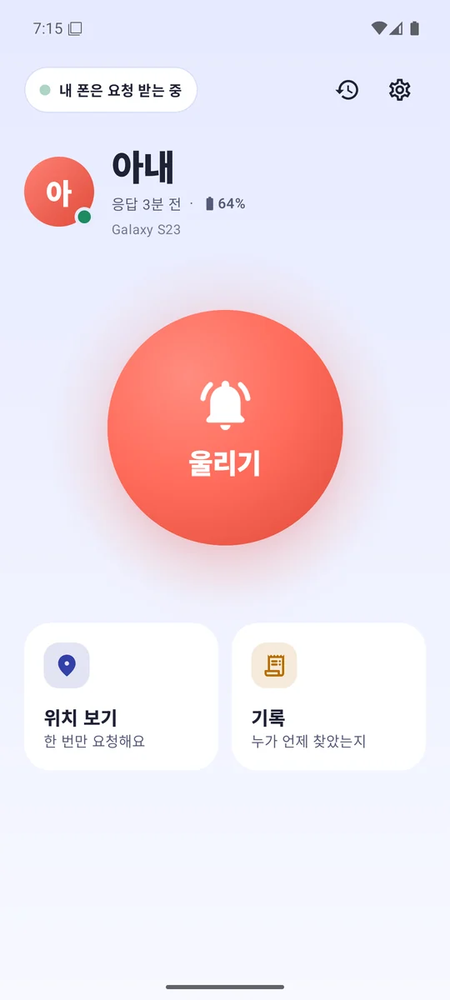
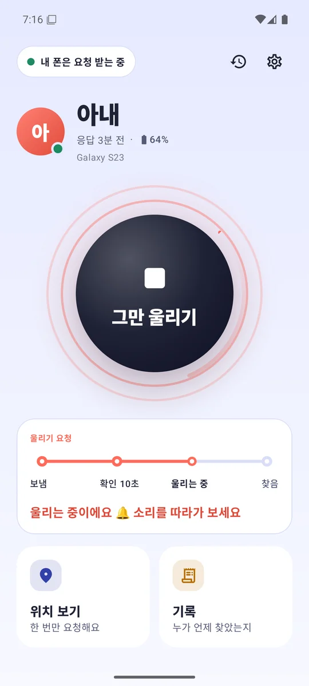
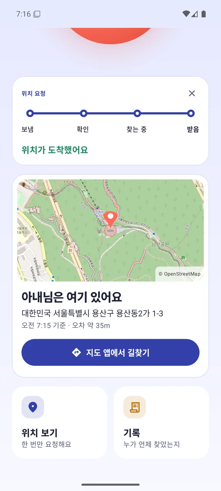
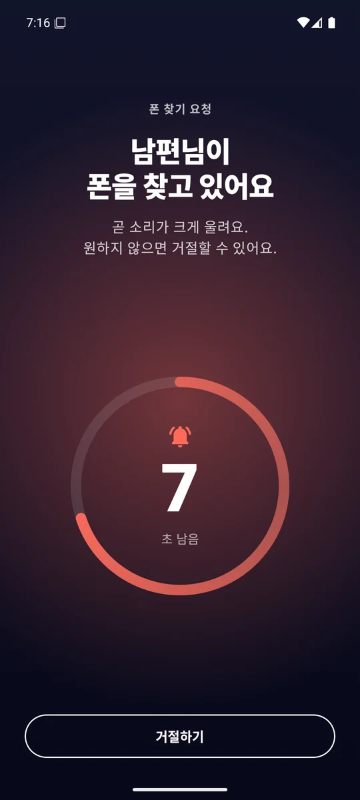
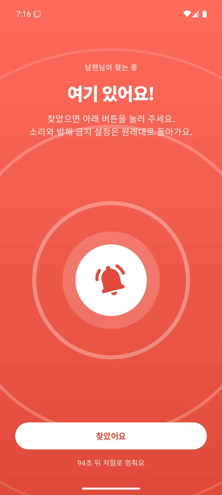
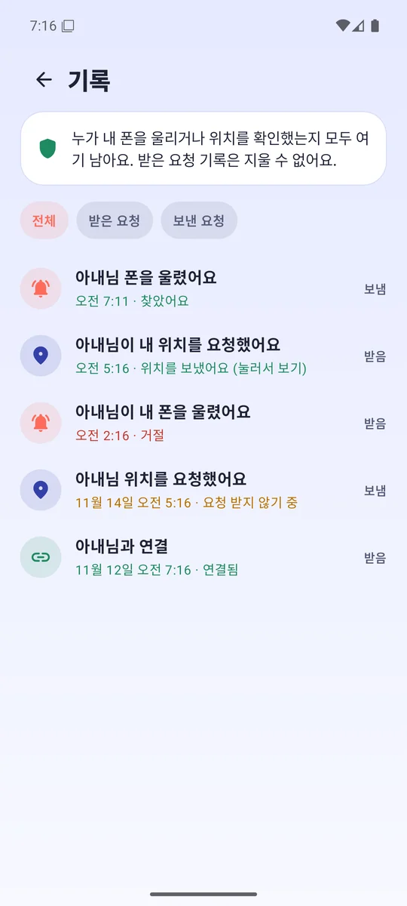

거절하기
울리기 전 10초, 위치를 보내기 전 10초 동안 언제든 거절할 수 있어요. 거절하면 상대 화면에 바로 표시돼요.
“여보, 내 폰 어디 있는지 알아?”
무음이든 방해 금지든 상관없이 크게 울리고, 찾으면 소리 설정이 원래대로 돌아가요. 집 안이든 밖이든 인터넷만 되면 돼요.
Android 10 이상 · 무료 · 오픈소스
눌러 보세요
요청이 바로 소리가 되지 않아요. 상대 폰에는 먼저 10초 동안 거절할 기회가 있어요.
요청은 두 폰만 아는 키로 암호화돼서 가요. 같은 Wi-Fi가 아니어도 돼요.
잠금 화면 위에 “○○님이 폰을 찾고 있어요”가 뜨고, 거절하기를 누를 수 있어요.
알람 소리로 울려서 무음·진동 모드도 뚫어요. 방해 금지 접근을 허용했다면 방해 금지 중에도 울려요.
‘찾았어요’를 누르면 소리가 멈추고, 볼륨과 방해 금지 설정이 울리기 전 그대로 돌아가요. 최대 2분 뒤엔 저절로 멈춰요.
찾는 사람은 진행 상황을 단계별로 보고, 찾아지는 사람은 잠금 화면 위에서 바로 거절하거나 ‘찾았어요’를 눌러요.
찾는 폰



찾아지는 폰



가족끼리라도 “몰래”는 없어요. 내 폰이 언제, 누구 때문에 울렸고 위치를 보냈는지 내가 알 수 있어요.
울리기 전 10초, 위치를 보내기 전 10초 동안 언제든 거절할 수 있어요. 거절하면 상대 화면에 바로 표시돼요.
30분 · 1시간 · 3시간 · 내일 아침 8시까지 · 직접 끌 때까지. 그동안 오는 요청은 소리 없이 기록만 돼요. 상대 화면에도 “받지 않는 중”이라고 보여요.
알리고 10초 뒤 보내기(기본, 폰을 잃어버렸을 때를 위해) · 내가 허용할 때만 · 보내지 않기. 어느 쪽이든 보낼 때마다 알림이 떠요.
누가 내 폰을 울렸는지, 내 위치를 확인했는지 기록 화면에 남아요. 받은 요청 기록은 지울 수 없어요.
잠든 폰을 깨우려면 서버가 하나 필요해요. 그래서 서버가 아는 것을 가장 적게 만들었어요.
받은 위치를 지도에 그릴 때는 그 주변 지도 조각을 OpenStreetMap 타일 서버에서 받아와요. 지도를 열지 않으면 요청하지 않아요.
자동 업데이트는 하루 두 번 GitHub 릴리스를 확인해요. 받은 APK는 체크섬과 서명 키가 지금 앱과 같을 때만 설치하고, 설정에서 끌 수 있어요.
P-256 ECDH + HKDF + AES-256-GCM. 자세한 내용은 프로토콜 문서에 있어요.
아래 버튼으로 APK를 받아 설치해요. “출처를 알 수 없는 앱” 허용을 물으면 이 설치에만 허용해 주세요.
APK 받기 릴리스 노트와 SHA-256가족에게 보일 이름(예: 아내, 남편)을 정하고, 알림 · 잠금 화면 표시 · 방해 금지 접근 · 위치를 허용해요.
한 폰에서 내 QR 보여주기, 다른 폰에서 QR 스캔하기. QR은 10분 동안 한 번만 쓸 수 있어요.
아직은 Android만 돼요. iPhone은 무음을 뚫고 울리려면 Apple의 별도 승인이 필요해요.
아니요. 두 폰 모두 인터넷만 되면 어디서든 돼요. 반대로 인터넷이 끊기면 같은 집 안이어도 동작하지 않아요.
평소에는 아무것도 하지 않아요. 요청이 올 때만 Google 푸시(FCM)로 깨어나요. 확실히 받으려면 배터리 최적화에서 제외해 주세요.
앱이 하루 두 번 새 버전을 확인해서 설치해요. 처음 한 번만 ‘이 앱의 설치 허용’을 눌러 주면 되고, 설정 → 업데이트에서 바로 확인하거나 끌 수도 있어요.
아니요. 위치를 보낼 때마다 상대 폰에 알림이 뜨고 기록에 남아요. 앱이나 알림을 숨기는 기능은 없어요.